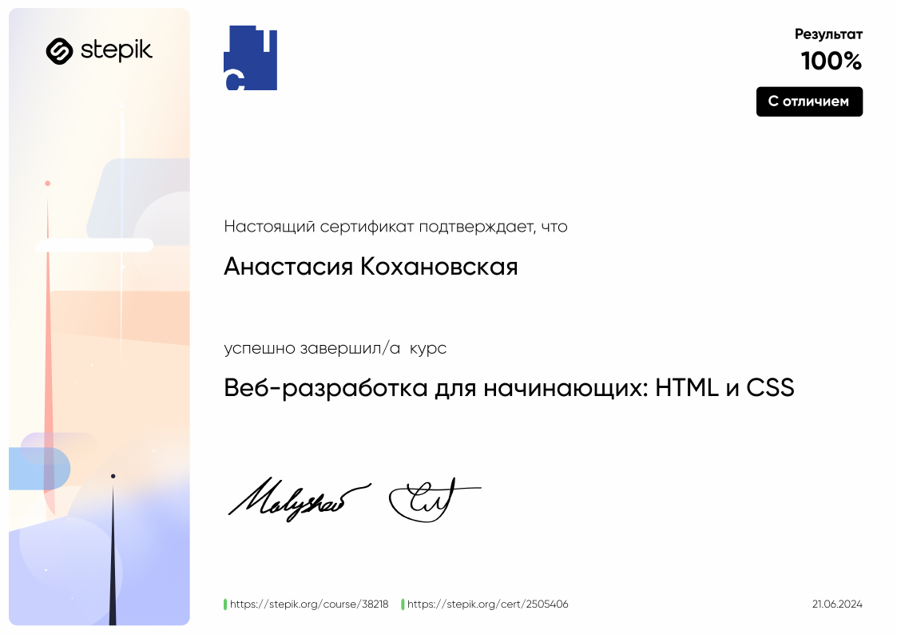

Profile
Anastasia Kokhanovskaya
25, residing in Armenia, i want to transform her life through programming.
A passionate traveler, i explore diverse cultures worldwide.
I cherishes my dog and is embarking on a new path blending my love for travel with my pursuit of coding skills, aiming for a fulfilling career in tech.
Contacts
Github:
https://github.com/kokhanovskaya
Email:kokhanovskaya_a@mail.ru
Discord:Kohanana
Telegram:Kohanana
Education
Incomplete higher education in UrFU. specialty - information systems and technologies.
Taking web development courses for beginners HTML and CSS on Stepik.
Experience of job
- Managment of resale
- Expert for remote development department
Skills
Hard skills
- Basic HTML and CSS layout skills
Soft skills
- Communication: The ability to clearly explain technical concepts to both colleagues and non-specialists.
- Teamwork: Willingness to work in a team, the ability to listen to others and contribute to the overall success of the project.
- Problem thinking: The skill of analyzing problems and finding effective solutions, including the ability to identify and correct mistakes.
- Time management: The ability to effectively manage work time, set priorities and meet deadlines.
- Adaptability and flexibility: The willingness to quickly adapt to changes in project requirements or technology stack.
- Self-motivation and learning activity: The desire to learn and improve their knowledge, follow new technologies and best practices.